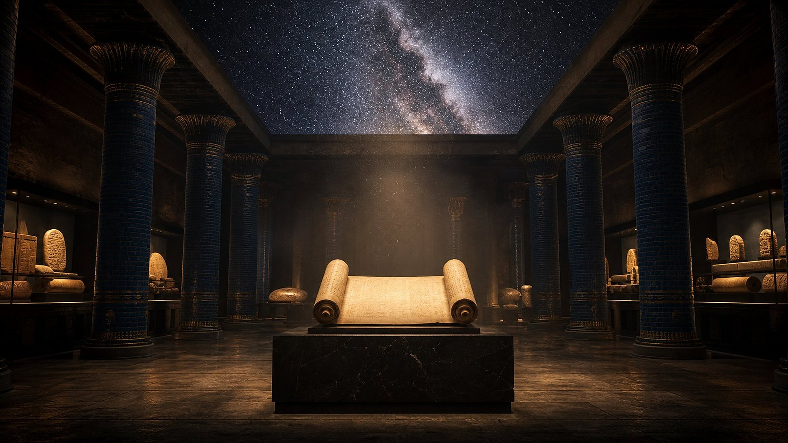
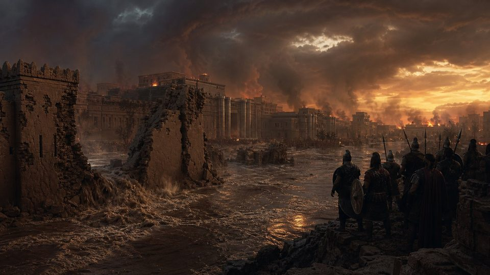
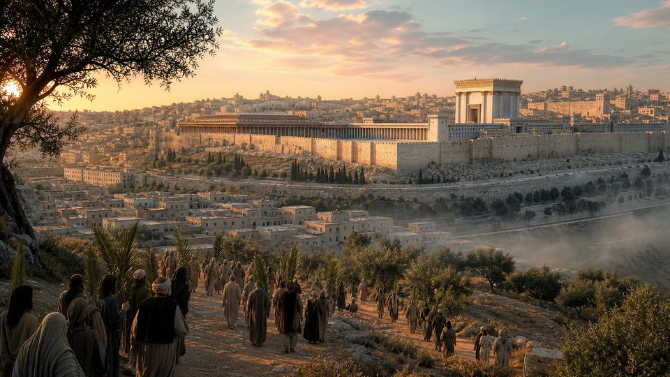
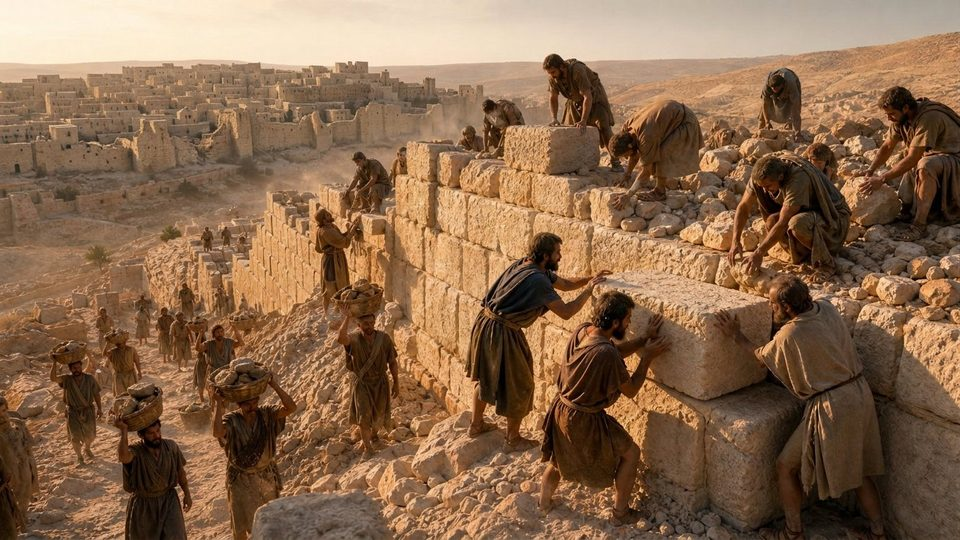
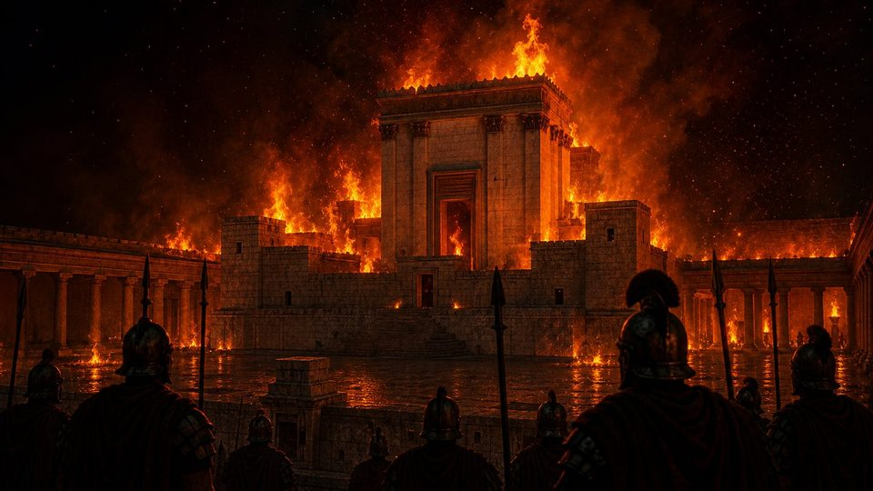
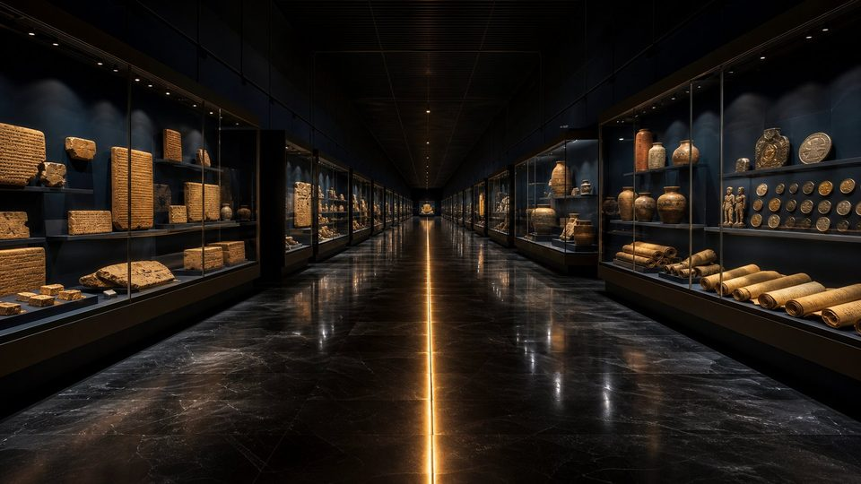

Salle 01
Comment reconnaître une vraie prophétie ?
Les critères qui distinguent une annonce authentique d’une prédiction après coup.

Musée virtuel · 17 salles · entrée libre
Le Musée des Prophéties de la Bible
« Déclarant dès le commencement ce qui sera à la fin. »Isaïe 46:10 · Darby 1885
Le principe du musée
Car moi, je suis Dieu, et il n’y en a pas d’autre ; [je suis] Dieu, et il n’y en a point comme moi, déclarant dès le commencement ce qui sera à la fin, et d’ancienneté ce qui n’a pas été fait, disant : Mon conseil s’accomplira.
Une prophétie n’est pas une intuition vague. C’est une annonce écrite, datée, précise, que l’histoire peut confirmer ou démentir.
Ce musée confronte les textes bibliques aux pierres, aux tablettes et aux chroniques des peuples anciens. Chaque pièce porte un badge : ce que l’archéologie établit, ce que l’histoire rapporte, ce que la lecture prophétique en déduit, et ce qui reste débattu.
Vous n’êtes pas invité à croire sur parole, mais à examiner.
Le parcours
Le parcours suit l’ordre du temps : des empires de l’Antiquité au premier siècle, puis à notre époque, et enfin à ce qui est annoncé pour l’avenir.
Les critères qui distinguent une annonce authentique d’une prédiction après coup.
Un roi perse nommé, un fleuve détourné, des portes laissées ouvertes : la nuit où Babylone tomba.
Une île réputée imprenable, une chaussée bâtie avec les ruines de la ville côtière.

La « ville de sang » si bien effacée qu’au iie siècle on ne savait plus dire où elle se trouvait.
Des destins différents annoncés pour chaque voisin d’Israël — et vérifiables aujourd’hui.
Les ostraca de Lakish, la ville détruite et une durée d’exil fixée à l’avance.

Une statue, quatre bêtes : la succession des empires jusqu’à notre époque.
Deux rois rivaux dont l’affrontement traverse les siècles.

Lieu de naissance, lignée, entrée à Jérusalem, mort : des détails écrits des siècles plus tôt.

Une prophétie chronologique qui pointe vers une année précise.

Une armée, un siège, une fuite : l’avertissement de Jésus mis à l’épreuve des faits.
Des affirmations bibliques étonnamment justes sur la Terre, la santé et le vivant.

Guerres, famines, épidémies, attitudes : les éléments d’un signe observé ensemble.
Les puissances mondiales en symboles, et une organisation internationale annoncée.
Les événements annoncés pour l’avenir, dans l’ordre — sans aucune date.

Toutes les prophéties du musée sur une seule ligne du temps.
Faire le bilan des pièces examinées et tirer sa propre conclusion.
Annonce → accomplissement
Chaque trait relie la date de rédaction d’une prophétie à son accomplissement. Les traits ouverts sont en cours ; le trait en pointillés désigne ce qui est encore à venir, sans aucune date.
Mode d’emploi
Le musée distingue toujours ce qui est établi de ce qui est interprété. Deux familles de badges l’indiquent.
Un objet ou un site fouillé, conservé et inventorié : tablette, inscription, couche de destruction.
Un fait rapporté par des historiens ou des chroniques anciennes, recoupé par la recherche.
Le lien établi entre le texte biblique et l’événement : c’est une interprétation, présentée comme telle.
Une question sur laquelle les spécialistes ne s’accordent pas. Les positions en présence sont exposées honnêtement.
L’événement annoncé s’est produit et peut être daté.
L’accomplissement a commencé et se poursuit sous nos yeux.
L’événement est annoncé pour l’avenir. Le musée ne donne aucune date.
Le musée ouvre ses salles une à une. Commencez par les critères qui distinguent une vraie prophétie.
Voir le parcours